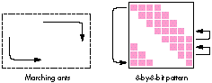
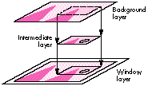

The Macintosh has always provided animation capabilities. From the early Macintosh
128K to current CPUs, animation has consistently played a large part in the
development of software. And though CPU models continue to change, the theories and
concepts behind animation have stayed basically the same. Simply stated, animation is
the process of stepping through a sequence of images, each slightly different from the
previous.
The thought of animation on the Macintosh usually brings to mind games and
multimedia, when in fact the actual use of animation is more prevalent than most
people imagine. I'll describe some common uses and methods of performing animation
and get you started on writing your own animation sequences.
METHOD 1: PRIMITIVE BUT EFFECTIVE
One of the most fundamental methods of animation is using the srcXor transfer mode.
The basic idea is that once you've drawn something in this mode, you can erase it
simply by drawing it again, restoring the bits underneath to their previous state.
Primitive though it may be, this method is common to many applications. Probably the
most obvious example of it can be found in the Finder. Familiar to even the novice
Macintosh user is the dotted rectangle that often appears during desktop navigation.
The movement of the dotted rectangle, which appears when the user selects multiple
icons or drags windows across the desktop, is a simple form of animation. The dotted
rectangle is also used to create the zooming effect when desktop folders are opened and
closed.
To use this method, you set the current transfer mode to srcXor before drawing the
object you plan to animate. In the desktop example, the Finder switches to srcXor mode
and then draws the dotted rectangle with a simple FrameRect call, with the PenPat set
to 50% gray. The movement of the dotted rectangle is accomplished by redrawing the
rectangle at its previous position before drawing it at its new location. With srcXor
mode, simply redrawing the rectangle at the same position restores the desktop to its
original state. So by repeatedly drawing and redrawing the rectangle in its new
position, you float a frame across the screen without damaging the contents of the
desktop.
As a variation on the dotted rectangle, applications use what's called the "marching
ants" effect. With this effect, the bounding frame gives the illusion that the dashed
lines or "ants" are moving around the edges of the box, thereby producing an animated
and more interesting visual appearance.

The marching ants effect is simple to create. The most common way to do this is with a
simple 8-by- 8-bit pattern. To create the illusion, you draw a bounding frame by
calling FrameRect, with the PenMode set to srcXor and the PenPat set to a pattern
defined with diagonal stripes (see the illustration below). Shifting the pattern up one
row, and then wrapping the first row of the pattern to the last row, creates the effect.
If the rows were shifted down rather than up, the ants would appear to move in the
opposite direction. In either case, the ants typically start at one corner of the box and
then end at the opposite corner.
As with the dotted rectangle, the frame is continually drawn and redrawn, but this
time with each new updated pattern. Note the difference between the two effects when
the frame is drawn: With the ants, the frame is constantly being drawn and redrawn
even if the rectangle's coordinates haven't changed. With the dotted rectangle, the
frame is redrawn only when its position has changed. Since no animation takes place
when the dotted rectangle is sitting in the same position, it's not necessary to
continually draw the frame in that case.
METHOD 2: NOT SEEING IS MORE THAN BELIEVING
Another method of performing animation is to use off-screen drawing. With this
method, the actual drawing is being done behind the user's back. The animation frames
are prepared off-screen and quickly transferred to the screen with CopyBits to create
the animation sequence. Regardless of what CPU you're running, this method can
provide excellent animation effects. And with the advent of GWorlds to simplify the
process of building off-screen environments, performing animation with this
technique has become much easier.
In this section I'll provide some important points to consider when building your own
off-screen world and describe how to apply these off-screen worlds to animation. For
a detailed description of creating your own custom GDevices, cGrafPorts, and pixMaps,
see the Macintosh Technical Note "Principia Off-Screen Graphics Environments."
Before even considering off-screen animation, you need to determine whether your
Macintosh has enough memory for creating the off-screen environment. Without
sufficient memory, you might as well forget it. Having high-performance,
high-quality animation isn't cheap. Most of what determines the amount of required
memory is the off-screen world's dimensions and pixel depth.
Once you've determined the dimensions and depth for the off-screen world, you're
ready to create the off-screen environment. Note that if you're using the GWorlds
introduced with 32-Bit QuickDraw, many of the off-screen initialization procedures
have been simplified. Also, with certain video display cards, the GWorlds can be cached
into the NuBusTM card's memory, providing even better performance when off-screen
worlds are used.
To create the off-screen environment, you pass NewGWorld the off-screen
dimensions, depth, and color table, and the routine creates the environment or warns
you if there wasn't sufficient memory. After you've made all the required memory
checks and created your off-screen environment, either by hand or with NewGWorld,
the next step is to create the animation sequence.
In the simplest case, the off-screen world is used to store an identical copy of what's
displayed on the screen. Rather than erasing and drawing the moving object on-screen,
you perform all this in the off- screen world. Once the moving object has been drawn
in its new position, the off-screen image is transferred to the screen. By continually
drawing the next frame of the moving object in the off-screen world before displaying
it on the screen, you produce the animation effect. The following steps describe the
process.
These steps create just one frame of the animation sequence. To create the full
sequence, repeat the last three steps until the animation is complete. In step 2, instead
of redrawing the entire background, you may want to redraw just the areas that need to
be restored, if that information is available. By redrawing just a portion of the
damaged background, you'll notice improved performance, especially when working
with higher pixel depths.
Besides providing a quick introduction to off-screen animation, this method has the
advantage that it's simple and straightforward. Since all the objects and images are
drawn at one time and in the same environment, it's easy to create your sequences and
synchronize the animation for any moving object. However, as mentioned earlier,
large off-screen images at higher pixel depths can really affect the performance of the
animation. To overcome this problem, you need to use multiple off-screen worlds.
METHOD 3: SWITCHING INTO HIGH GEAR
The concept of multilayer off-screen worlds isn't much different from the basics of
off-screen animation. Rather than having just one off-screen environment, you've
also got an intermediate off- screen layer in which all the actual drawing is completed,
leaving the background layer undamaged. So unlike the previous method, where one
off-screen world was used for storing the background and the moving object, this
method uses two separate off-screen worlds to maintain this information. The
following steps describe how the intermediate layer fits in.
When moving multiple objects, you'll need to decide whether to handle the objects
separately or in groups. In the case where objects are widely dispersed in the window,
it would be more practical to create a separate intermediate layer for each object than
to create one layer containing all the objects. Since no changes are occurring in
places between widely spread objects, unnecessary time and memory would be spent
updating these areas.

However, if the objects are closely spaced, grouping the objects and creating one
intermediate layer would make more sense. Since objects can overlap each other,
creating separate off-screen worlds would not be too practical or easily accomplished.
So when determining the number of intermediate off-screen layers, you'll want to
first check where the objects are located in the window.
The main advantage of using the intermediate layer is the performance improvement.
As mentioned earlier, transferring large blocks of data at high pixel depths can be time
consuming. As you can guess, the smaller the transfer image, the less time QuickDraw
requires. Another advantage of using this layer is the ability to isolate the background
image. Since all the drawing is taking place in the intermediate layer, there's no need
to redraw the background image for each frame, which can be a real time saver for
complex backgrounds. Though more memory is required with the addition of the
intermediate layer, the performance gains can sometimes make the extra memory
worth it.
Finally, to fully optimize the animation performance, you'll want to be sure the data
transfer from the off-screen layers is as fast as possible. Since you can influence the
speed of CopyBits, here are a few points you'll want to keep in mind when creating and
using off-screen layers:
By following as many of these points as possible, you'll improve the performance that
you'll get out of CopyBits and waste less time in the on-screen updates.
LIGHTS, CAMERA, ACTION!
I've presented several methods of animation; which method to use depends on your
application. In fact, you may choose to use several methods or switch between methods
under different system requirements. Say your application uses multiple layering for
optimal animation; under low-memory conditions, you may want to switch to just one
off-screen world to provide at least some type of off- screen animation. But if that
isn't even an option, you may have to do all the animation on-screen. For an example
that does exactly that, see DTS.Draw in the Sample Code folder on theDeveloper CD
Series disc. If sufficient memory is available to create the off-screen worlds, the
application uses the multilayer method; otherwise, the application decides on the next
best method based on the current available memory.
This column has described different animation techniques, but the principle behind
them is basically the same, even if the results don't show it. Given a set of slightly
different images, all the methods involve stepping through the series of images, where
each object in the image is erased before the next object in the series is displayed.
Animation provides excellent visual effects, more fun for the programmer, and most
important, an enhanced experience for the user. Now that you've got the basics of
animation on the Macintosh, I hope you'll be inspired to animate your own
applications!
EDGAR LEE (AppleLink EDGAR) Recently spared from the traumas of big city living,
Edgar enjoys the relaxing and granola-like atmosphere of sunny Cupertino. When
asked what he likes most about the area, he proudly points to his car stereo in disbelief
that it's still there. Besides adjusting to his newly found appreciation of suburban
living, Edgar enjoys a good challenge of doubles volleyball, an excellent head-to-head
game of Tetris, and learning the newest and latest human tricks from his faithful
companion, Sunny. Though Edgar realizes Sunny is only a dog, he still believes some of
the engineers here at Apple could stand to learn a lot from her. Of course these
engineers don't seem to agree. *
For more information on caching GWorlds into NuBus memory and improving
drawing performance, see "Macintosh Display Card 8*24 GC: The Naked Truth" in
develop Issue 3.*
For source-code routines that create and manage off-screen layers, see
GWLayers in the Sample Code folder on theDeveloper CD Series disc. To see how these
routines are actually used, check out the Kibitz and DTS.Draw samples on the CD as
well. (GWLayers is brought to you by Forrest Tanaka, and Kibitz and DTS.Draw are
from Eric Soldan.) *